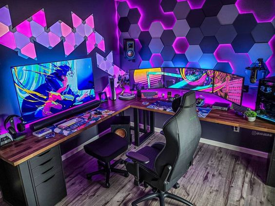

Na parte da manhã eu acordo, inicio meu computador e entro em todos os ambientes
corporativos necessários para trabalhar, e após estar logado vou tomar meu café da manhã.
Ao longo da manhã analiso chamados do dia anterior e eventuais problemas
que possam surgir, além disso participo de reuniões de planejamento de atividades e acompanhamento de clientes.
Finalizando a minha manhã e já iniciando o período da tarde me ausento do trabalho para fazer
o intervalo/almoço e voltando realizo algumas atividades como:
Ao anoitecer me arrumo para me deslocar para o Senac, mas caso seja um dia que não tenha aula basicamente assisto anime, leio manhwas e/ou jogo.
